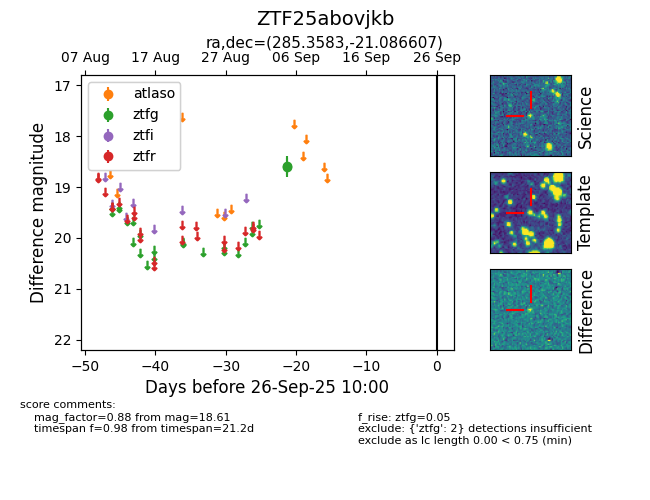

FINK: ZTF25abovjkb
Lasair: ZTF25abovjkb
ALeRCE: ZTF25abovjkb
ZTF25abovjkb (ztf,fink)
equatorial (ra, dec) = (285.3583,-21.08661)
galactic (l, b) = (15.0000,-11.55203)

last ztfg=18.61
2 ztfg detections